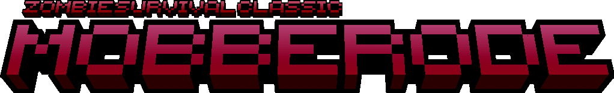

A series of mini-game datapacks for Minecraft Java Edition that is based on a cooperative wave defense against the endless horde.


Zombie Survival Classic / Mobberode
A tough endless wave defense game that is based on cooperative play with over 20+ configs to experiment with and support for all custom ZSC maps.
[Stable - 0.8.9] [Unstable - 0.9] [Planet Minecraft] [Trello]
Necro Brawl
A more PvPvE competitve orientated and modern version of ZSC/Mobberode where the first player to reach the points goal wins the game.
[GitHub Stable - 1.0]ZSCreator
The creator tool for making custom ZS maps!
[Download ZSCreator - Beta 4] [ZSCreator Wiki]
To be soon in development... (ZSM)
It's a mystery on what this mini-game might be.
Icement/Trunkis 2024. This is a website dedicated to my ZS mini-games